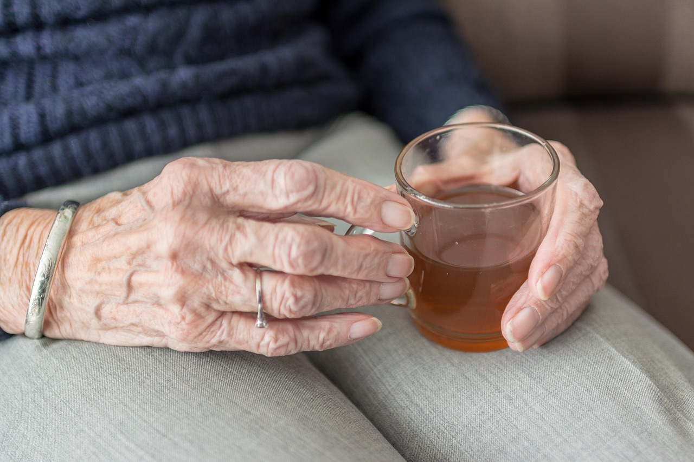
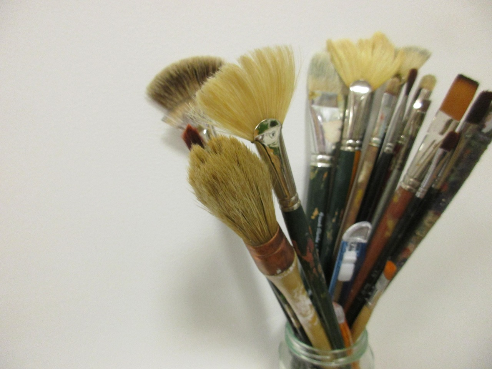
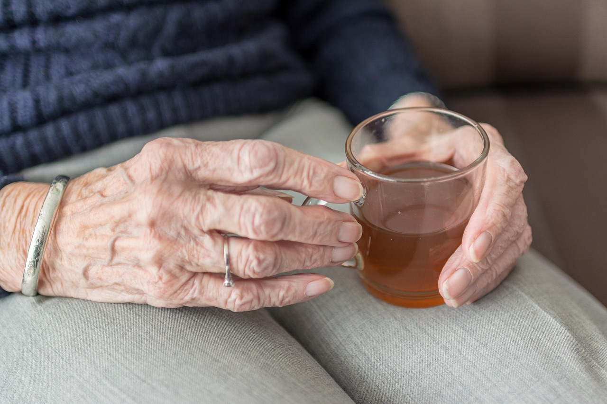
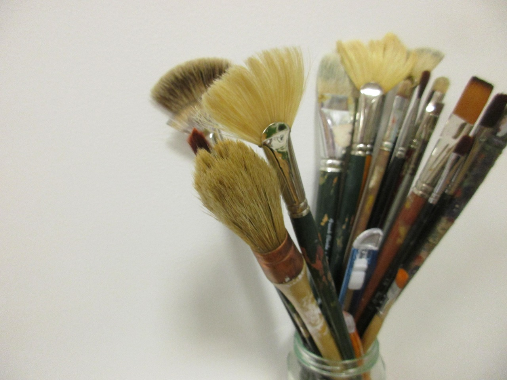

Meringue
A pastry chef in mid-thought, tangling with the business and the beauty of making cakes. Even the smallest touch, like setting a raspberry on meringue, carries meaning.
Jo Esterly
I write to hold onto the essence of being human — the quiet courage to try, the humility to listen, the strength in dignity. Intangible, yet powerful.
In moments between words, I seek to capture the stories told by our hands, our brows, our gestures. These moments are often too fleeting to notice, yet too vital to miss.
 



A pastry chef in mid-thought, tangling with the business and the beauty of making cakes. Even the smallest touch, like setting a raspberry on meringue, carries meaning.
A garbage man's keen eye watches a woman select objects from trash cans on his route. In her hands, he sees a broken picture frame become a relic.
At a red light, a delivery driver realizes how much he learned from watching others, yet knows that accumulated knowledge will be erased.
He sees her grasping to dignity in her pursed lips, deciding whether to take a sip.
She is pulled — by doubts, fears and distractions — but the strongest pull was always toward the paint.
Every fingerprint of intrinsic intelligence carries the echo of the ancient and a lightness of being.
These portraits were written to gently hold our intrinsic intelligence that emerges in setbacks, adapts and perseveres. The kind of strength that lies humbly beneath learned skills.
Where this work might resonate is still unfolding.
To read selected portraits, please reach out.